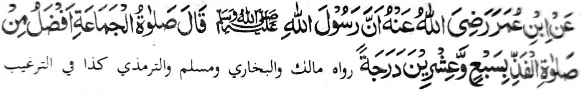
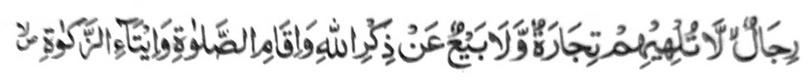

Lagid o kiya-aloy niyan ko Pamkasan, a madakel a di-i zambayang lalayon ogaid na di ran sisiyapen so Kambarajoma. So Nabi (Sallallaho ‘Alaihi wa Sallam) na tanto niyan a inipami-is so kapamangeped ko Kambarajoma sa lagid den o kinipami-is niyan ko Sambayang.
Giyangka-iya a ba-adan na dowa ka pinto. So paganay ron na piyagosay niyan so balas o Kambarajoma na so ika dowa na piyagosay niyan so balas o kindaraynonen non.

Miyakathitayan ko (Abdullah) Ibn Omar (Radhiallaho ‘Anho) a mata-an a so Rasulollah (Sallallaho ‘Alaihi wa Sallam) na pitharo iyan, “So Sambayang a barajoma’ na makalelebi ko Sambayang a tarambisa sa dowa polo ago pito ka daradat.”
O aya gi-i tano kipamayandegen ko Sambayang tano na antano maka kowa sa balas ko Allah, na ino tano di penggolalanen si-i sa Masjid, a ron sabap a kaphakakowa tano sa dowa polo ago pito takep a milelebi niyan. Da-a tao a ba malalong a ba niyan di makowa so dowa polo a go pito takep a laba a miyaka-ito ito a kakharomasay niyan non.
Ogaid na da-a tanto a inengka tano ko khalaba tano sabap ko manga amal tano! Daden a sabapa-i a rowar sa di tano paga-arega-an so Agama tano ago so manga balas. Tanto a piyakarata-rata sa ginawa a tanto tano den a gi-i melogat ko kakowa-a tano ko maito a laba sangka-iya a donya, ogaid na da-a panamar tano ko manga laba sa Alongan a Maori, a khakowa-an tano sa dowa polo ago pito a kapakalelebi niyan ko maito a khipagoman tano a galebek.
Aya ipenda-owa tano na o song tano sa Masjid ka antano makapamangeped ko barajoma’ na khakeleban tano so tinda tano na kasabapan sa kalapis tano. Giyangka-iya sabap ago so manga lagid iyan a di niyan kha-alangan so tao a tarotop so paratiyaya niyan ko Kala o Allah a, ago so Katharo Iyan ago mai-inengka iyan so arga o manga limo ago balas sa Alongan a Maori. Sabap ko lagida-i a manga tao na pitharo o Allah si-i kiran:

“So manga mama a da kiran makasendod so kapamasa go so kaphasa pho-on ko tadem ko Allah go so kipamayandegen ko Sambayang...” (Surah An-Nur: 37)
Miyapanothol makapantag ko Salim Saddad (Rahmatullah ‘Alaihi) (a padagang ago Auliya) a igira miyaneg iyan so bang na pephamoti sekaniyan ago pethabaden. Pethikaras tomindeg, na phagawa-an niyan so tinda niyan a kaleleka-an na go gi-i niyan imbayok angka-iya a manga pananaro-on:
Miya-aloy sa Hadith: “So manga tao a lalayon sa Masjid na siran i manga tao ron. So manga Mala-ikat na aya iran bolayoka ago pembentel kiran igira pekhasakit siran ago phagogop kiran igira zisi-i siran ko manga galebekan niran.”